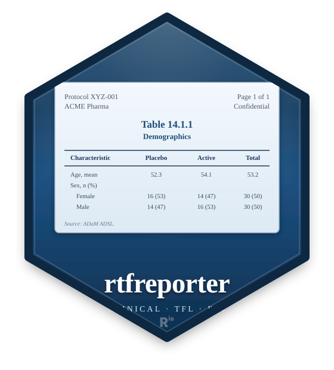
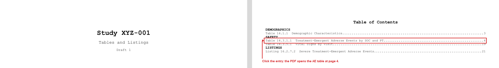
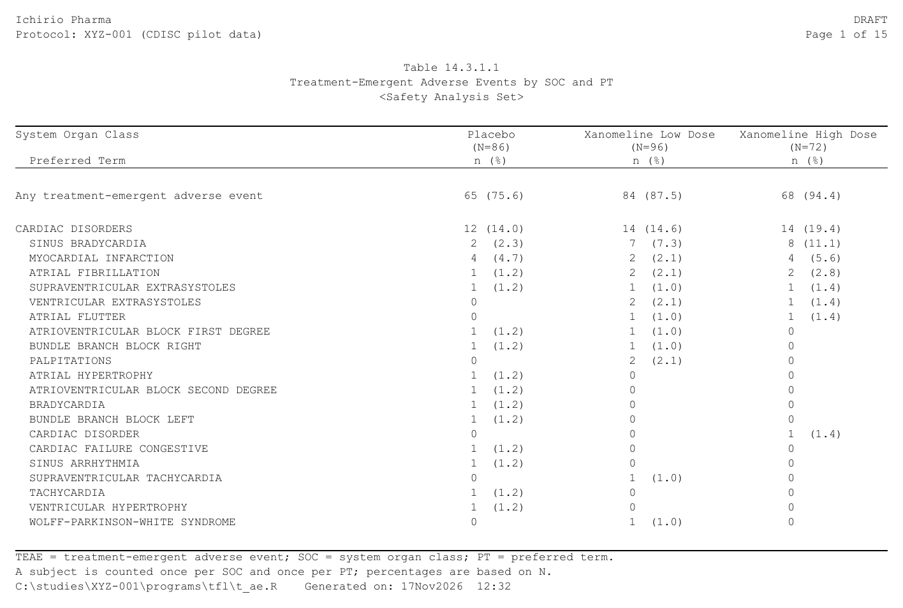
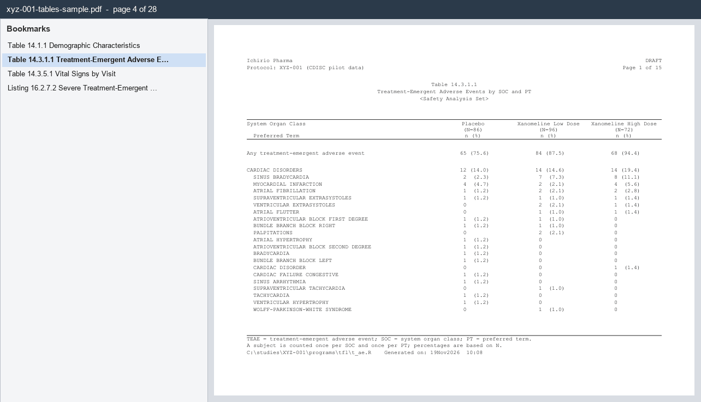

Assembling reports into one document
Source:vignettes/articles/assembling.Rmd
assembling.RmdA clinical deliverable is many tables, listings and figures, each
written to its own .rtf by its own program.
assemble_rtf() joins them into one
document: a cover page, a table of contents whose entries are
links, each output starting on its own page with its own running header
and footer, and a bookmark per output, which Word and LibreOffice turn
into the PDF’s bookmarks.
The Gallery’s demographics, adverse events, vital signs and listing, assembled with a cover page and a table of contents, then converted to PDF with LibreOffice:

Each entry of the table of contents is a link. Click the adverse events entry and the reader opens that table’s first page:

Show code
files <- c("t_dm.rtf", "t_ae.rtf", "t_vs.rtf", "l_sae.rtf") # the Gallery's outputs
assemble_rtf(
files, "XYZ-001_tables.rtf", overwrite = TRUE,
cover = list(title = "Study XYZ-001", subtitle = "Tables and Listings",
version = "Draft 1"),
toc = data.frame(
file = files,
heading = c("DEMOGRAPHICS", "SAFETY", "SAFETY", "LISTINGS"),
label = c("Table 14.1.1 Demographic Characteristics",
"Table 14.3.1.1 Treatment-Emergent Adverse Events by SOC and PT",
"Table 14.3.5.1 Vital Signs by Visit",
"Listing 16.2.7.2 Severe Treatment-Emergent Adverse Events")))
system2("soffice", c("--headless", "--convert-to", "pdf", "XYZ-001_tables.rtf"))The outputs first
Each output is written as it always is – its own program, its own
generate_rtfreport(). Here, two small ones:
Show code
make <- function(title, path) {
d <- data.frame(A = c("1", "2"), B = c("x", "y"), stringsAsFactors = FALSE)
doc <- rtf_document() |> rtf_tables(as_rtftables(d), titles = list(c(title)))
generate_rtfreport(doc, path, overwrite = TRUE); path
}
f1 <- make("Table 14.1.1 Demographics", tempfile(fileext = ".rtf"))
f2 <- make("Table 14.2.1 Adverse Events", tempfile(fileext = ".rtf"))A table of contents from the titles: toc = "auto"
toc = "auto" builds one TOC entry per file, taking each
label from the file’s title: its title rows as the file shows them,
joined with two spaces ("Table 14.1.1" and
"Demographics" give
"Table 14.1.1 Demographics"):
pkg <- tempfile(fileext = ".rtf")
assemble_rtf(c(f1, f2), pkg, toc = "auto", overwrite = TRUE)
file.exists(pkg)
#> [1] TRUEA cover page and a table of contents of your own:
cover =, toc =
For sections and explicit labels, pass the table of contents as a
table: one row per file, its label, and a
heading printed above the entry whenever it changes
(level sets the indent). Each entry creates an RTF
bookmark, so the TOC is navigable in the word processor
and the entries jump to the right table:
Show code
pkg2 <- tempfile(fileext = ".rtf")
assemble_rtf(
c(f1, f2), pkg2,
cover = list(title = "Study XYZ-001", subtitle = "Final Tables", version = "v1.0"),
toc = data.frame(
file = c(f1, f2),
heading = c("EFFICACY ANALYSES", "SAFETY ANALYSES"),
label = c("Table 14.1.1 Demographics", "Table 14.2.1 Adverse Events")
),
overwrite = TRUE
)
file.exists(pkg2)#> [1] TRUEassemble_rtf() also takes a toc_leader and
a toc_style for the table of contents; see
?assemble_rtf.
Page numbers
The assembled document’s pages are numbered in one sequence from its first page: the cover is page 1, the table of contents comes next, then the outputs, with no restart. The total is all the pages. With a cover, a one-page table of contents and seven pages of tables, the first table is page 3 of 9 and the last 9 of 9; the page each entry of the table of contents points to is counted the same way.
Each output can also keep its own running footer, so a table says
Page 2 of 5 of itself, whichever page of the deliverable it is
on: write it with the static {PAGE} /
{TOTAL_PAGES} tokens, filled in when that output is
written. The dynamic {AUTO_PAGE} /
{AUTO_TOTAL_PAGES} give the deliverable’s own numbers
instead, and so does assemble_rtf(book_page = ) for a
{BOOK_PAGE} slot an output reserved.
Assembling a folder: assemble_folder()
To combine every RTF in a directory,
assemble_folder(dir, output_file) reads each file’s table
number and title into a table of contents and assembles them. Without
output_file it returns that table instead: edit the order,
headings and labels (or save it with spec_file = and edit
it in Excel), then pass it – or its path – to
assemble_rtf(toc = ). See
?assemble_folder.
Bookmarks in the PDF, and Word and LibreOffice
The assembled file is RTF. Each table of contents entry is a link to a bookmark at the start of its file, and each file also starts with a heading at an outline level, printed invisibly (white, one point high). Word and LibreOffice show those headings as the PDF’s bookmarks when they export the file to PDF, so the PDF can be navigated table by table, as an eCTD submission expects. With LibreOffice from R:
system2("soffice", c("--headless", "--convert-to", "pdf", pkg2))
pdftools::pdf_toc(sub("[.]rtf$", ".pdf", pkg2)) # one bookmark a fileThe page numbers in the table of contents are fields that already hold the page rtfreporter computed for each file; Word and LibreOffice update them when they refresh fields. In Word itself a link follows on Ctrl+click, its default setting.
Converting to PDF
rtfreporter writes RTF; it does not write PDF. Convert the assembled file to PDF with Adobe Acrobat or a similar tool – Word, or LibreOffice – and keep the options that create bookmarks from headings.
A sample. xyz-001-tables-sample.pdf (28 pages, 124 KB) is the assembled file above – the Gallery’s outputs, made from the CDISC pilot data – converted with LibreOffice, not Acrobat. It opens with the bookmarks panel beside the first page; each bookmark, and each entry of the table of contents, opens its output’s first page:

The picture is drawn from the sample’s own outline and page (by
data-raw/gen_assemble_pdf.py); it is not a screenshot of
Acrobat.
With LibreOffice, the PDF export options that matter
are: export bookmarks, PDF version 1.7 (or PDF/A), initial view
“Bookmarks Panel and Page”, default page layout and magnification,
lossless images. From the command line they go in the filter options of
--convert-to; data-raw/gen_assemble_pdf.py in
the package’s repository has the full set.
With Microsoft Word, as tested with the same kind of file:
- open the RTF, select all (Ctrl+A) and update fields (F9), so the table of contents’ page numbers and the page fields are current;
- save as PDF with the option that creates bookmarks from headings turned on; the PDF/A option is there too, when PDF/A is wanted;
- in Japanese Word, the last empty paragraph can take the East Asian default font (for example Yu Mincho), which then appears in the PDF’s font list (tracked as rtfreporter#1110).
Optional finishing steps
Two FDA settings can be added after the conversion. Both are optional, and both use tools outside rtfreporter:
-
Open with the bookmarks panel (the PDF’s
/PageMode /UseOutlines). LibreOffice’s “Bookmarks Panel and Page” initial view and Word’s export already set it; otherwise set the initial view in Acrobat’s document properties. - Fast Web View (a linearized PDF). LibreOffice and Word’s plain export do not linearize; Acrobat can, and so can the free command-line tool qpdf:
qpdf --linearize xyz-001-tables.pdf xyz-001-tables-fwv.pdf
qpdf --check-linearization xyz-001-tables-fwv.pdfThe sample had both steps, and its document title and author were set to neutral values (no person’s name).
The sample against the FDA PDF specifications
Checked against the FDA’s Portable Document Format (PDF) Specifications, version 4.1, with qpdf, pypdf and PyMuPDF:
| Item | FDA v4.1 | The sample | Result |
|---|---|---|---|
| PDF version | 1.4 to 1.7, PDF/A-1, PDF/A-2 | 1.7 | Pass |
| Fonts | non-standard fonts fully embedded | Courier New (a standard font), embedded | Pass |
| Security | no security or password | not encrypted | Pass |
| Bookmarks | one for each TOC item | 4 bookmarks, one per output | Pass |
| TOC links | linked TOC; “Inherit Zoom” | 8 links (label and page number), each to its page, zoom inherited | Pass |
| Initial view | Bookmarks Panel and Page; layout and magnification default |
/UseOutlines, no layout or zoom set |
Pass |
| Fast Web View | optimized for fast web view | linearized (qpdf) | Pass |
| Page size | 8.5 x 11 in, orientation kept | letter; landscape tables, one portrait | Pass |
| Margins | left 3/4 in; 3/8 in elsewhere; landscape top 3/4 in | every page 0.75 in left and right; top 0.75 in on the table pages, 0.9 in on the cover and TOC | Pass |
| Images | resolution, lossless compression | no images: text only, searchable | Pass |
| JavaScript, external links, attachments | none | none | Pass |
| Metadata | – | title set, neutral author | Pass |
See ?assemble_rtf and ?assemble_folder for
every argument.
Where next
- Rendering and post-processing — writing one output, and editing the written file
- Headers, footers and tokens — the running header and footer each output keeps
- The pharmaverse catalog — tables of three packages, assembled